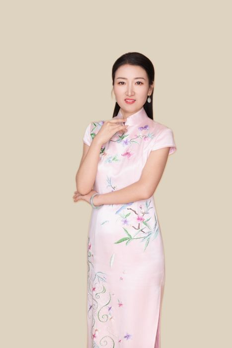
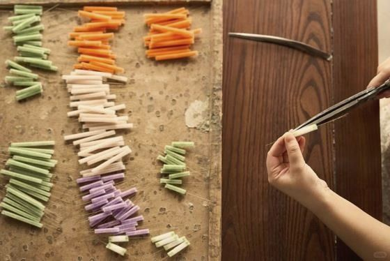
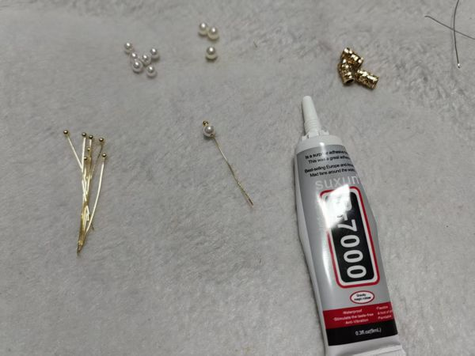
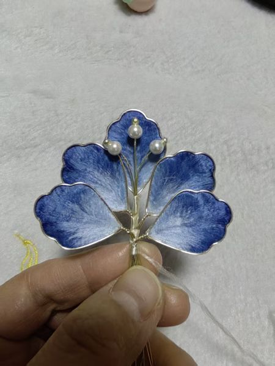
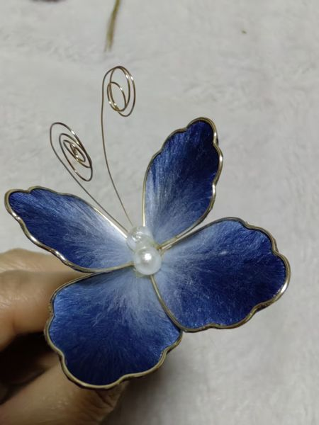
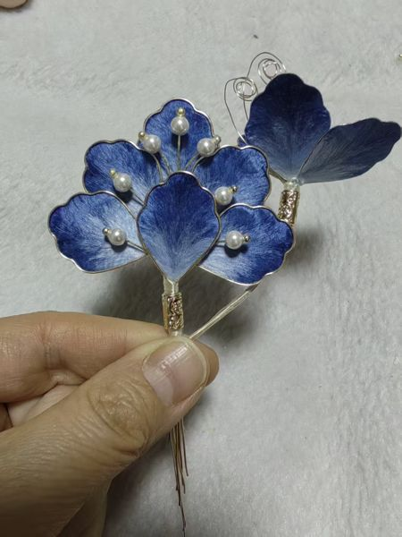
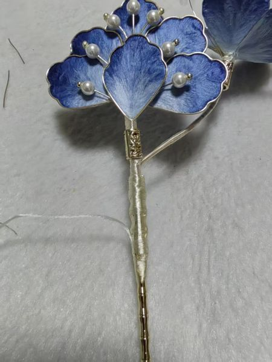
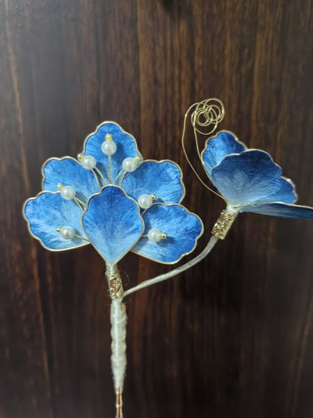

Third Seat · Ronghua
A Thread of Silk第三席 · 一缕丝绒

Velvet-flower work · 绒花作品
What is Ronghua何为绒花
Lifelike flowers of boiled mulberry silk on annealed copper wire, made by hand. Rong sounds like 荣, glory, so they carry a wish for good fortune.
以熟桑蚕丝为绒面、退火铜丝为骨架；“绒”谐音“荣”，寓意荣华吉祥。
Palace flowers under the Tang; everyone wore flowers in the Song; flower markets in Nanjing, Yangzhou and Beijing in the Ming and Qing; Jiangsu provincial heritage since 2006.

Li Shujun李淑君Certified heritage lecturer
绒花历史与手作 · 认证非遗文化讲师
绒花历史与手作 · 认证非遗文化讲师

01
Twisting勾条
Wire grips combed silk and is twisted into a velvet strip.
铜丝夹住丝绒，捻成绒条。

02
Trimming打尖
Fine scissors cut petal and leaf shapes.
小剪修出瓣形与叶形。

03
Assembling传花
Built layer by layer and bound with copper.
逐层组合，铜丝绑扎。
The Brooch: Butterfly & Flower蝶恋花胸针
Petals and wings were made in advance; guests assembled, joined and wrapped their own.
花瓣与蝶翅提前制好，嘉宾完成组合、合枝与缠线。





